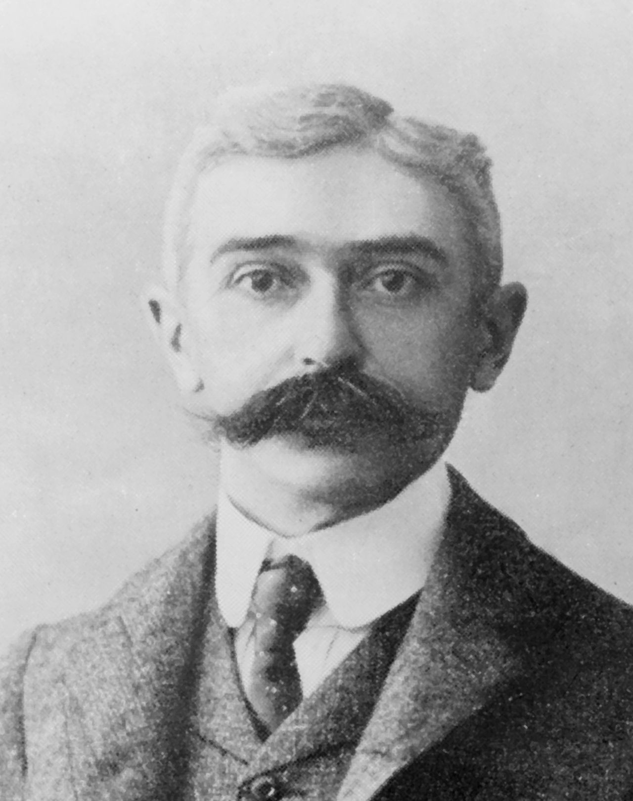

Acerca de...
HISTORIA JJOO
1. HISTORIA:
Las Olimpíadas son el mayor evento deportivo internacional multidisciplinario en el que participan atletas de diversas partes del mundo. Los Juegos Olímpicos son considerados la principal competición del mundo deportivo, con más de doscientas naciones participantes. Existen dos tipos: los Juegos Olímpicos de Verano y los Juegos Olímpicos de Invierno, que se realizan con un intervalo de dos años, según la Carta Olímpica: «Los Juegos de la Olimpiada se celebran durante el primer año de una Olimpiada, y los Juegos Olímpicos de Invierno durante su tercer año».
Los Juegos Olímpicos modernos se inspiraron en los del siglo VIII a. C. organizados por los antiguos griegos en la ciudad de Olimpia, entre los años 776 a. C. y el 393 d. C. En el siglo XIX, surgió la idea de realizar unos eventos similares a los organizados en la antigüedad, los que se concretarían principalmente gracias a las gestiones del noble francés Pierre Frèdy, barón de Coubertin. El barón de Coubertin fundó el Comité Olímpico Internacional (COI) en 1894. Desde entonces, el COI se ha convertido en el órgano coordinador del Movimiento Olímpico, con la Carta Olímpica que define su estructura y autoridad. La primera edición de los llamados Juegos Olímpicos de la era moderna se llevó a cabo en Atenas, capital de Grecia, a partir del 6 de abril de 1896. Desde aquella oportunidad, han sido realizados cada cuatro años en diversas ciudades del mundo, siendo las únicas excepciones las ediciones de 1916, 1940 y 1944, debido al estallido de la Primera y Segunda Guerra Mundial. La evolución del movimiento olímpico durante los siglos XX y XXI ha dado lugar a varias modificaciones en los Juegos Olímpicos. Algunos de estos ajustes incluyen la creación de los juegos de invierno para deportes invernales, los juegos paralímpicos para atletas con algún tipo de discapacidad y los Juegos Olímpicos de la Juventud para atletas adolescentes. Los Juegos Olímpicos de invierno se realizaron por primera vez en 1924, en la localidad francesa de Chamonix. Originalmente realizados como parte del evento de verano, el COI los consideró como un evento separado retroactivamente, y desde esa fecha comenzaron a realizarse en el mismo año que los juegos originales. Posteriormente, con el fin de potenciar el desarrollo de los eventos invernales, el COI decidió desfasar la realización de los Juegos invernales a partir de Lillehammer 1994. Desde esa fecha, los Juegos Olímpicos de Invierno se realizan en los años pares entre dos Juegos de Verano. Los primeros Juegos Olímpicos de la Juventud de Verano se celebraron en Singapur en 2010, mientras que los Juegos Olímpicos de la Juventud de Invierno se celebraron en Innsbruck en 2012.


El COI ha tenido que adaptarse a una variedad de avances económicos, políticos y tecnológicos. Como resultado, los Juegos Olímpicos se han alejado del amateurismo puro, según lo previsto por Coubertin, para permitir la participación de los atletas profesionales. La creciente importancia de los medios de comunicación de masas inició el tema de patrocinio de las empresas y la comercialización de los Juegos. Grandes boicots se realizaron durante la Guerra Fría en los Juegos de 1980 y 1984.
El Movimiento Olímpico consta de Federaciones Internacionales de cada deporte, Comités Olímpicos Nacionales y Comités Organizadores de cada edición. El COI es responsable de la elección de la ciudad sede. Según la Carta Olímpica, la ciudad anfitriona es responsable de la organización y el financiamiento de los Juegos. El programa olímpico, compuesto por los deportes disputados en los Juegos, también está determinado por el COI. Existen diversos símbolos y ceremonias olímpicas, como la bandera y la antorcha olímpicas, así como las ceremonias de apertura y clausura.
Cerca de 13 000 atletas compiten en los Juegos Olímpicos de Verano e Invierno en 33 deportes diferentes y en aproximadamente 400 eventos. Los ganadores del primer, segundo y tercer lugar en cada evento reciben medallas olímpicas: oro, plata y bronce, respectivamente.
En la actualidad casi todos los países están representados en los Juegos Olímpicos. Esto ha provocado diversos problemas: dopaje, sobornos y actos de terrorismo. Cada dos años, los Juegos Olímpicos y su exposición a los medios, proporcionan a los atletas desconocidos la oportunidad de alcanzar la fama nacional e internacional. Además constituyen una oportunidad para el país y la ciudad sede de darse a conocer al mundo.
Los Juegos Olímpicos antiguos —llamados así por celebrarse en la ciudad de Olimpia — fueron fiestas atléticas celebradas cada cuatro años en el santuario de Zeus en Olimpia, Grecia. En la competencia acudían participantes de varias ciudades-estado y reinos de la antigua Grecia. En estos juegos se realizaban diversos eventos deportivos, combates y carreras de cuádrigas. Durante los juegos, los conflictos entre las ciudades-estado participantes se posponían hasta la finalización de las competiciones deportivas. Este cese de las hostilidades fue conocido como paz o tregua olímpica. El origen de los Juegos Olímpicos está rodeada de misterio y leyenda. Según el relato del historiador griego Pausanias, el Dáctilo Heracles Ideo (no confundir con Heracles el hijo de Zeus) y cuatro de sus hermanos corrieron a Olimpia para entretener al recién nacido Zeus. Al ganar, Heracles se coronó con una corona de olivo y estableció la costumbre de celebrar la serie de eventos deportivos en honor a Zeus, cada cuatro años. Píndaro, en otro relato, atribuye los Juegos Olímpicos a Heracles, el hijo de Zeus, además que persiste la idea de que después de completar sus doce trabajos, construyó el estadio olímpico en honor a Zeus. Tras su finalización, se dirigió en línea recta doscientos pasos, y llamó a esto "distancia estadio" (en griego: στάδιον), que más tarde se convirtió en una unidad de distancia. Otro mito asocia a los primeros Juegos con el antiguo concepto griego de la tregua olímpica (ἐκεχειρία). La fecha de inicio más aceptada para los Juegos Olímpicos de la Antigüedad es 776 a. C. Esto se basa en inscripciones ubicadas en Olimpia, una lista de ganadores de una carrera pedestre celebrada cada cuatro años a partir del año antes mencionado. En la antigüedad se celebraron eventos de carreras, un pentatlón —consistente en eventos de salto, lanzamiento de disco y jabalina, una carrera pedestre y lucha—, boxeo, lucha libre, pancracio y eventos ecuestres. La tradición dice que Corebo, un cocinero de la ciudad de Elis, fue el primer campeón olímpico.
Los Juegos Olímpicos tenían una importancia religiosa fundamental, que presentó eventos deportivos, junto con sacrificios rituales en honor a Zeus (cuya estatua, realizada por Fidias, fue colocada en el templo de Olimpia) y a Pélope, héroe divino y rey mítico de Olimpia. Pélope fue famoso por su carrera de carros con el rey Enómao de Pisa. Los ganadores de los eventos fueron admirados e inmortalizados en poemas y estatuas. Se celebraron cada cuatro años, y este período, conocido como Olimpiada, fue utilizado por los griegos como una de sus unidades de medida del tiempo. Los juegos fueron parte de un ciclo conocido como los Juegos Panhelénicos, que incluía a los Juegos Píticos, los Juegos Nemeos y los Juegos Ístmicos.
Los Juegos Olímpicos llegaron a su cénit en los siglos V y VI a. C., sin embargo su poder disminuyó gradualmente tras el aumento de poder de los romanos en Grecia. Si bien no hay consenso entre los expertos en cuanto a cuando finalizaron oficialmente, la fecha más aceptada es el 393 d. C., cuando el emperador Teodosio I decretó que todos los cultos y prácticas paganas serían eliminadas. Otra fecha comúnmente citada es el 426 d. C., cuando su sucesor, Teodosio II ordenó la destrucción de todos los templos griegos.
Se ha documentado que durante el siglo XVII se empleó de diversas formas el término "olímpico" para describir eventos deportivos en la era moderna. El primero de estos eventos fue el CotswoldOlimpickGames, una reunión deportiva anual realizada en las cercanías de ChippingCampden, Inglaterra. Fue organizado por el abogado Robert Dover entre 1612 y 1642, con varias celebraciones posteriores hasta la actualidad.
La Asociación Olímpica Británica describe a estos juegos como «los primeros estimulantes de los comienzos olímpicos del Reino Unido». L'Olympiade de la République, era un festival olímpico nacional celebrado entre 1796 y 1798 en la Francia revolucionaria también trató de emular a los antiguos Juegos Olímpicos. La competición incluyó diversas disciplinas de los Juegos Olímpicos antiguos. El evento de 1796 marcó la introducción del sistema métrico en el deporte.
E n el año 1 8 5 0 , una clase olímpica fue iniciada por el Dr. Williams Pennybrookes en MuchWenlock, Shropshire, Inglaterra. En 1859, Brookes le cambió el nombre por el de Juegos Olímpicos Wenlock. Este festival deportivo anual continúa celebrándose hasta la actualidad. La Sociedad Olímpica de Wenlock fue fundada por Brookes el 15 de noviembre de 1860. Entre 1862 y 1867, Liverpool celebró el Grand Olympic Festival, un festival anual. Fue diseñado por John Hulley y Charles Melly. Estos juegos fueron los primeros en ser totalmente amateur, sin embargo solo los "caballeros amateurs" podían competir. El programa de la I Olimpiada, celebrada en Atenas en 1896, fue casi idéntico al de los Juegos Olímpicos de Liverpool. En 1865, Hulley, Brookes y E. G. Ravenstein fundaron la Asociación Olímpica Nacional en Liverpool, un predecesor de la Asociación Olímpica Británica. Los artículos asentados durante la fundación de la asociación fueron el bosquejo de la Carta Olímpica Internacional. En 1866, se celebraron unos Juegos Olímpicos Nacionales en Reino Unido que fueron organizados en el Crystal Palace de Londres.
El interés griego de revivir los Juegos Olímpicos comenzó con la Guerra de independencia de Grecia, donde los griegos lucharon contra el Imperio Otomano en 1821. En 1833, el poeta y editor PanagiotisSoutsos propuso restablecer los Juegos Olímpicos de la Antigüedad. EvangelosZappas, un rico filántropo griego, en 1856 escribió al rey Otón I de Grecia ofreciéndose a financiar el renacimiento permanente de los Juegos Olímpicos.Zappas patrocinó los primeros Juegos Olímpicos en 1859, que fueron celebrados en una plaza de la ciudad de Atenas. Los atletas que participaron en ellos eran originarios de Grecia y el Imperio Otomano. Zappas además financió la restauración del antiguo Estadio Panathinaiko para que pudiera acoger futuras ediciones. El estadio fue sede en 1870 y 1875. Treinta mil espectadores asistieron a la edición de 1870; sin embargo, no hay registros oficiales de asistencia del evento de 1875. En 1890, después de asistir a los Juegos Olímpicos de la Sociedad Olímpica de Wenlock, el barón Pierre de Coubertin se inspiró para fundar el Comité Olímpico Internacional (COI). Coubertin basó sus ideas en los trabajos de Brookes y Zappas, con el objetivo de establecer unos Juegos Olímpicos internacionales que se celebraran cada cuatro años. Presentó estas ideas durante el primer Congreso Olímpico. Esta reunión se celebró del 16 al 23 de junio de 1894, en la Universidad de París. El 23 de junio se adoptó unánimemente una resolución que definía el renacimiento de los Juegos Olímpicos; además se estableció que la primera edición de estos sería celebrada en Atenas dos años después. También se asentaban las bases para la fundación del COI. El COI eligió al escritor griego DimitriosVikelas como su primer presidente. Dos años más tarde, Coubertin sustituyó a Vikelas como presidente de este organismo.El COI se estableció con representantes de 12 países.
El atleta estadounidense James Connolly (triple salto y salto de altura) fue el primer campeón olímpico de la historia moderna.
Los primeros Juegos Olímpicos se celebraron bajo los auspicios del COI en el Estadio Panathinaiko en Atenas en 1896. Participaron 241 atletas de 14 países que compitieron en 43 eventos de 9 deportes. Zappas y su primo Konstantinos Zappas habían dejado al gobierno griego un fideicomiso para financiar futuros Juegos Olímpicos. Este fideicomiso se empleó en el financiamiento de Atenas 1896. George Averoff contribuyó a la remodelación del estadio. El gobierno griego también aportó fondos. Se esperaba que estos fueran recuperados a través de la venta de entradas y de la venta de la primera serie de estampillas conmemorativas.
Los funcionarios griegos y el público en general estaban entusiasmados con la experiencia de albergar unos Juegos Olímpicos. Este sentimiento fue compartido por muchos de los atletas, que incluso exigieron que Atenas fuera la ciudad sede permanente de este evento. Sin embargo, el COI buscó rotar a diversas ciudades de todo el mundo la sede, de esta manera se eligió a París como ciudad sede de la segunda edición de los Juegos Olímpicos.